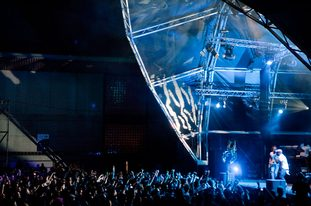

Sónar Festival daily report #3: New Order, Maya Jane Coles, Modeselektor, Deadmau5


With the partying continuing across every corner of Barcelona over the weekend, the final edition of ‘Sónar by Night’ returned to the Fira Gran Via conference centre, with an even more massive crowd returning for the festival’s biggest night yet, out of a three day festival that entertained over 150,000 over the duration.
The marquee acts were kicking off barely after the front doors even opened, with New Order lighting up the SonarClub warehouse space, the early arrivals treated to the blissful sounds of Crystal and Regret that they opened their set with. Flanked by beautiful visuals that further heightening the nostalgic vibes, they most definitely make for the perfect legacy act for this kind event, their rock/electronic crossover sound still relevant to this day.
Following this, it was an eclectic selection of musical treats across the three different stages. Pretty Lights took over in SonarClub immediately after with his epilepsy-inducing light show, while The Roots also hit the main SonarPub stage with their live rock and hip hop show early on in the evening, a good indication of the variety we’d see across the sprawling Fira Gran Via up until 6am.
Hot Chip followed on SonarPub to showcase their critically acclaimed new album, while a massive crowd had gathered for indie-dance hipsters Metronomy next door at the open-air SonarLab. The house scene’s hot-new-thing Maya Jane Coles followed with some rolling deep grooves that put everyone in in the zone, flanked by Azari & III who followed.
Madeon was one of the bigger surprises of the evening, with his bubbly, Daft Punk-inspired melodic electro hitting all the right notes, so much that Deadmau5 who followed seemed a little flat and even dated in comparison, in spite of his big colourful ‘cube’ stage show.
Another of the festival’s supremo live acts Modeselektor then exploded onto SonarPub, ripping out over the stadium with their bangin’ party techno, while Laurent Garnier took over next for something slightly harsher with his LBS live show, his techno big enough to fill the massive space though still bringing plenty of melody. Luciano finished up over in SonarClub with an appropriately pumping set that took the crowd up until 6am.
The parties continued over the weekend in Barcelona, with a Minus beach party going down at the Boo Beach Club as well as a Drumcode party featuring techno titan Adam Beyer, among countless others, reflecting the Sónar weekend’s stunning concentration of dance talent.